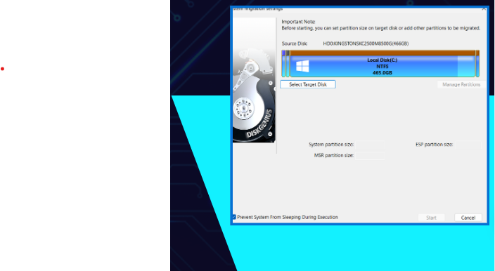

Inicio
Que es DiskGenius
Que puede hacer
Particiones
Recuperar datos
Clonar sistemas operativos
Formatear
Verificar y reparar sectores
Configurar entradas de arranque UEFI/BIO
Reconstruir MBR
Clonar sistemas operativos
Selecciona la particion donde tengas el sistema operativo que quieras clonar
Y selecciona “Start”

Es compatible con disco duros de maquinas virtuales